16.7.2008Auch Transalp Rennen nicht vor FSC Bikern sicher!
Die Biker Christof Hepp und Johannes Knafl vom Funsportclub FSC 3x6=18 stellen sich der Herausforderung und starten am 19.7.08 in Füssen (Bayern) beim Transalp-Rennen.Mehr...
Die Biker Christof Hepp und Johannes Knafl vom Funsportclub FSC 3x6=18 stellen sich der Herausforderung und starten am 19.7.08 in Füssen (Bayern) beim Transalp-Rennen.Mehr...
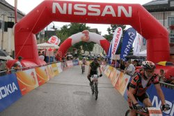 16.7.2008FSC Biker bei der Salzkammergut Trophy
Houns und Rynee waren bei einem der härtesten MTB-Marathons Österreichs dabei. Houns hat wieder mal bewiesen, dass er immer noch unser guter alter Houns of Hell ist, und Rynee hat auch wieder das Stehaufmandl in sich entdeckt...Mehr...
Houns und Rynee waren bei einem der härtesten MTB-Marathons Österreichs dabei. Houns hat wieder mal bewiesen, dass er immer noch unser guter alter Houns of Hell ist, und Rynee hat auch wieder das Stehaufmandl in sich entdeckt...Mehr...
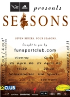 9.4.2008SEASONS Premieren Wien und Graz
die pilger haben wieder zugeschlagen:
adidas eyewear presents
SEASONS
brought to you by funsportclub.com
25.4.: vienna, schikaneder, 16:30
29.4.: graz, uni sportzentrum, 20:30Mehr...
die pilger haben wieder zugeschlagen:
adidas eyewear presents
SEASONS
brought to you by funsportclub.com
25.4.: vienna, schikaneder, 16:30
29.4.: graz, uni sportzentrum, 20:30Mehr...
26.3.2008FSC Bike Sitzung in Oberwart, 5.4.08
Am 5.4. treffen wir uns um 18:00 zur Saison-eröffnungssitzung im Hexenkessel in Oberwart. Bei Chili und Bier werden wir die Pläne und Ideen für 2008 durchgehen. Am Nachmittag werden wir um 14:00 eine kleine Bikerunde in Bernstein anstarten. Treffpunkt bei Rynee.
Am 5.4. treffen wir uns um 18:00 zur Saison-eröffnungssitzung im Hexenkessel in Oberwart. Bei Chili und Bier werden wir die Pläne und Ideen für 2008 durchgehen. Am Nachmittag werden wir um 14:00 eine kleine Bikerunde in Bernstein anstarten. Treffpunkt bei Rynee.
30.9.20073x6=18 Downhill Crew am Zauberberg
Am 30.9. fand das letzte Rennen der Österreichischen Downhillserie statt. Die 3x6=18 DH Racer Andy, Michi und Tschortsch waren dabei - hier gibts die ersten Fotos!
Am 30.9. fand das letzte Rennen der Österreichischen Downhillserie statt. Die 3x6=18 DH Racer Andy, Michi und Tschortsch waren dabei - hier gibts die ersten Fotos!
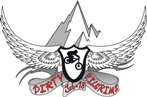 19.7.2007Bike Jerseys Bestellung!
Die Mitglieder des FSC haben dank dem Einsatz mehrerer 3x6=18er die Möglichkeit, Bike Jerseys mit Dirty Pilgrims Aufdruck zu bestellenMehr...
10.6.2007Mountainbike Bürgerinitiative
Der FSC 3x6=18 powered by Raiffeisenclub unterstützt Gerald Simon bei seiner Initiative zu einer Gesetztesänderung im Forstgesetz (§33) vom Nationalrat durch eine Bürgerinitiative.Mehr...
12.6.2007FSC Biker erfolgreich beim 12h Rennen in Regau
Die FSC Biker Andi, Michi und Tschortsch holten sich beim 12h Rennen in Regau am 9.6. den hervorragenden 3. Platz! Gratulation!Mehr...
Die FSC Biker Andi, Michi und Tschortsch holten sich beim 12h Rennen in Regau am 9.6. den hervorragenden 3. Platz! Gratulation!Mehr...
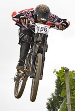 7.5.2007Großkampfwochenende der FSC-Biker
Das verlängerte Wochenende vom 28.4. – 1.5. bedeutete für die Mountainbiker der FSC 3x6=18 powered by Raiffeisenclub ein Großkampf-Wochenende. Mehr...
Das verlängerte Wochenende vom 28.4. – 1.5. bedeutete für die Mountainbiker der FSC 3x6=18 powered by Raiffeisenclub ein Großkampf-Wochenende. Mehr...
10.4.2007FRIEREIDA MTB-Film Premiere Graz
Am 20.4. findet im Uni-Sportzentrum Graz die Graz-Premiere des Österreichischen MTB Freeride & DH Films FRIEREIDA statt.Mehr...
Am 20.4. findet im Uni-Sportzentrum Graz die Graz-Premiere des Österreichischen MTB Freeride & DH Films FRIEREIDA statt.Mehr...
5.3.2007Dirty Pilgrims Sitzung
Am 24.3. um 18:00 setzen wir uns im Akira / Grosspetersdorf zusammen und besprechen diverse wichtige Angelegenheiten. Alle Interessenten sind herzlichst eingeladen.
Am 24.3. um 18:00 setzen wir uns im Akira / Grosspetersdorf zusammen und besprechen diverse wichtige Angelegenheiten. Alle Interessenten sind herzlichst eingeladen.
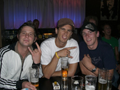 6.1.2007Bike & Climb Video Party
Wir veranstalten am 20.1. im Kringers in Wien ein Party mit Bike- und Kletter Videos. Der Reinerlös der Veranstaltung geht an die Hinterbliebenen von Hari Berger.Mehr...
Wir veranstalten am 20.1. im Kringers in Wien ein Party mit Bike- und Kletter Videos. Der Reinerlös der Veranstaltung geht an die Hinterbliebenen von Hari Berger.Mehr...
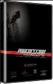 15.11.2006Kranked 6 Premieren in Graz u Wien
Der FSC veranstaltet wieder mal Filmpremieren in Graz und in Wien, diesmal Kranked 6 - Progression.Mehr...
Der FSC veranstaltet wieder mal Filmpremieren in Graz und in Wien, diesmal Kranked 6 - Progression.Mehr...
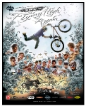 21.9.2006New World Disorder 7 Premiere in Graz
Der Funsportclub veranstaltet am 27.10. die Graz Premiere des neuen, brandheissen Freeride MTB Films NWD 7!Mehr...
21.7.2006Proceed Downhill Bike zu verkaufen
Ein Kollege von uns verkauft einen 1A-Downhiller. Seht selbst.Mehr...
Ein Kollege von uns verkauft einen 1A-Downhiller. Seht selbst.Mehr...
14.7.2006FSC organisiert Österreich Premieren von STRIPPED
Nach dem grossen Erfolg der ROAM Premieren setzen wir noch eins drauf und präsentieren euch im Sommer 2006 den neuen Kanadischen MTB-Freeride Film STRIPPED.
Die weltweiten Tour-Dates gibts hier!Mehr...
Nach dem grossen Erfolg der ROAM Premieren setzen wir noch eins drauf und präsentieren euch im Sommer 2006 den neuen Kanadischen MTB-Freeride Film STRIPPED.
Die weltweiten Tour-Dates gibts hier!Mehr...
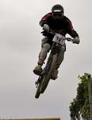 3.7.2006DH Rennen Silberberg
Dany und Andy haben am vergangenen Wochenende das Northshore-Downhill Rennen am Silberberg/Leibnitz bestritten. Fotos vom Rennen gibts hierMehr...
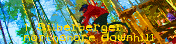 26.6.2006Northshore-Downhill Silberberg
Am 1. & 2. Juli 06 bestreiten die beiden Pilgrims Dany und Andy das Northshore-Downhill Rennen am Silberberg bei Leibnitz / Stmk.Mehr...
Am 1. & 2. Juli 06 bestreiten die beiden Pilgrims Dany und Andy das Northshore-Downhill Rennen am Silberberg bei Leibnitz / Stmk.Mehr...
30.5.2006Dirty Pilgrims im Juni 06
Hier findet ihr die aktuellen Pläne der Pilger für Juni 2006...Mehr...
Hier findet ihr die aktuellen Pläne der Pilger für Juni 2006...Mehr...
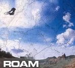 1.4.2006FSC organisiert ROAM Premieren
ROAM ist der Nachfolger des weltweit beachteten, epischen Mountainbike-Film "The Collective".
Der FSC 3x6=18 organisiert die Premiervorstellungen in Wien und Graz.Mehr...
ROAM ist der Nachfolger des weltweit beachteten, epischen Mountainbike-Film "The Collective".
Der FSC 3x6=18 organisiert die Premiervorstellungen in Wien und Graz.Mehr...
3.5.2006DH-Trainingscamp Maribor
Die Dirty Pilgrims beginnen am kommenden Wochenende, also 6. & 7. Mai, die DH-Rennsaison mit einem zweitägigen Trainingscamp in Maribor. Am 20.5. findet das erste Rennen in Parschlug statt.
Die Dirty Pilgrims beginnen am kommenden Wochenende, also 6. & 7. Mai, die DH-Rennsaison mit einem zweitägigen Trainingscamp in Maribor. Am 20.5. findet das erste Rennen in Parschlug statt.
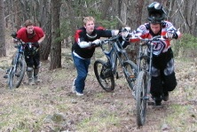 1.5.2006Dirty Pilgrims - Home Trails
Ein neues Lebenszeichen von den Dirty Pilgrims - das erste Mal im Jahr 2006 auf Tour und schon war die Cam dabei: Dirty Pilgrms - Home TrailsMehr...
Ein neues Lebenszeichen von den Dirty Pilgrims - das erste Mal im Jahr 2006 auf Tour und schon war die Cam dabei: Dirty Pilgrms - Home TrailsMehr...
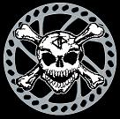 23.2.2006Dirty Pilgrims Sitzung
Am 4.3. findet ab 21:00 die Sitzung der Dirty Pilgrims in der Rollerbar, Kleinzicken, statt. Der ursprüngliche Termin (25.2.) musste verschoben werden. Es geht v.a. um die Pläne 2006.Mehr...
Am 4.3. findet ab 21:00 die Sitzung der Dirty Pilgrims in der Rollerbar, Kleinzicken, statt. Der ursprüngliche Termin (25.2.) musste verschoben werden. Es geht v.a. um die Pläne 2006.Mehr...
25.10.2005Letzter Park Trip nach Maribor
Am Samstag, 29.10., fahren die Pilger das letzte mal für heuer nach Maribor in den Bikepark. Letzte Chance für alle, die sich das bis jetzt entgehen ließen!Mehr...
Am Samstag, 29.10., fahren die Pilger das letzte mal für heuer nach Maribor in den Bikepark. Letzte Chance für alle, die sich das bis jetzt entgehen ließen!Mehr...
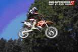 5.10.2005MTB + MX Saisonabschlussveranstaltung
Der Bike und Motocross Sommer ist zuende, daher haben die Dirty Pilgrims und die Jungs vom MSC Hochneukirchen eine Abschlussveranstaltung ausgeheckt.Mehr...
Der Bike und Motocross Sommer ist zuende, daher haben die Dirty Pilgrims und die Jungs vom MSC Hochneukirchen eine Abschlussveranstaltung ausgeheckt.Mehr...
25.7.2005Dirt Park Großpetersdorf
Am Samstag, 30.7., treffen wir uns um 10.00 zum Shapen im Dirtpark. Zu Mittag steht eine ordentliche Grillerei an, und am Nachmittag werden wir bis in den Abend arbeiten und gleich eine Jamsession anhängen. Helfende Hände sind willkommen!
Der Park ist zwischen Lucky Town und Rockerbude zu finden.
Am Samstag, 30.7., treffen wir uns um 10.00 zum Shapen im Dirtpark. Zu Mittag steht eine ordentliche Grillerei an, und am Nachmittag werden wir bis in den Abend arbeiten und gleich eine Jamsession anhängen. Helfende Hände sind willkommen!
Der Park ist zwischen Lucky Town und Rockerbude zu finden.
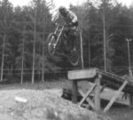 25.7.2005Maribor am Sonntag, 31.7.
Nachdem wir kürzlich den Bikepark Maribor entdeckt und als besuchenswert befunden haben, fahren wir am Sonntag zum Dritten mal hin. Wer Lust hat, mitzukommen, soll sich bei Rynee melden!Mehr...
Nachdem wir kürzlich den Bikepark Maribor entdeckt und als besuchenswert befunden haben, fahren wir am Sonntag zum Dritten mal hin. Wer Lust hat, mitzukommen, soll sich bei Rynee melden!Mehr...
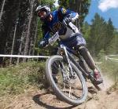 7.7.2005Dirty Pilgrims Saalbach-Hinterglemm Trip
Kleine Änderung der Pläne:
Sonntag, 17.7.: Bikepark Maribor
Montag 18. & Dienstag 19.: HinterglemmMehr...
Kleine Änderung der Pläne:
Sonntag, 17.7.: Bikepark Maribor
Montag 18. & Dienstag 19.: HinterglemmMehr...
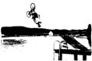 8.7.2005Lake Jump Contest 23.7. Burger Stausee
Nachdem uns das Wetter am 2.7. einen Strich durch die Rechnung gemacht hat, kommen wir am 23. wieder nach Burg und lassen's krachen. Lakejump Contest deluxe mit Tunes von DJ MastaShapa und AfterContest BBQ Party in der Rollerbar. Beginn ca. 14.00.Mehr...
Nachdem uns das Wetter am 2.7. einen Strich durch die Rechnung gemacht hat, kommen wir am 23. wieder nach Burg und lassen's krachen. Lakejump Contest deluxe mit Tunes von DJ MastaShapa und AfterContest BBQ Party in der Rollerbar. Beginn ca. 14.00.Mehr...
29.6.2005Build & Ride Again Video online
BIG BIG THANKS an LURGE! Er hat sich hingesetzt und ein pipifeines Video von unserm Build & Ride Again Contest gezaubert. Seht selbst!
(benötigt Quicktime).
(benötigt Quicktime).
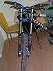 26.6.2005Dany's neues Baby
Unser Meisterdropper Dangerous Dan hat sich ein neues Spielzeug zugelegt...nennt sich Monster T und schaut auch so aus. Ein paar Fotos davon gibts hier unter "Bikes". Mehr...
Unser Meisterdropper Dangerous Dan hat sich ein neues Spielzeug zugelegt...nennt sich Monster T und schaut auch so aus. Ein paar Fotos davon gibts hier unter "Bikes". Mehr...
26.6.2005Slopestyle Saalbach Hinterglemm
Ein Teil der Pilgrims war am 18./19.6. beim Slopestyle Contest in SaHi - Europa's größtem MTB-Freeride Event. Hier gibts einige Fotos...
Ein Teil der Pilgrims war am 18./19.6. beim Slopestyle Contest in SaHi - Europa's größtem MTB-Freeride Event. Hier gibts einige Fotos...
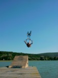 14.6.2005Lake Jump Tour 2005
Der See und der lange Steg warten wieder auf uns! Auch in diesem Sommer werden wir die lokalen Badeseen mit unserer BMX-Lakejump Tour unsicher machen.
Teaser!Mehr...
Der See und der lange Steg warten wieder auf uns! Auch in diesem Sommer werden wir die lokalen Badeseen mit unserer BMX-Lakejump Tour unsicher machen.
Teaser!Mehr...
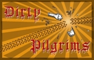 8.6.2005Dirty Pilgrims Sitzung, Rollerbar, 10. Juni
Am Freitag, 10.6., findet ab 20.00 die Sitzung der Dirty Pilgrims in der Rollerbar, Kleinzicken, statt. Wir werden einen kleinen Rückblick über die erste Jahreshälfte, sowie einen Ausblick auf den Rest des Jahres geben. Mehr...
Am Freitag, 10.6., findet ab 20.00 die Sitzung der Dirty Pilgrims in der Rollerbar, Kleinzicken, statt. Wir werden einen kleinen Rückblick über die erste Jahreshälfte, sowie einen Ausblick auf den Rest des Jahres geben. Mehr...
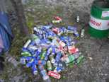 7.6.2005Fotos von Leogang online
Unser Road Trip Mitte Mai fand wieder mal hauptsächlich in Leogang statt. Ein paar gute Fotos vom Dany findet ihr hier.
Unser Road Trip Mitte Mai fand wieder mal hauptsächlich in Leogang statt. Ein paar gute Fotos vom Dany findet ihr hier.
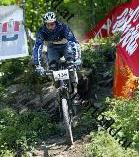 30.5.2005Dirty Pilgrims bei der Downhill - ÖM
Die Pilger waren wieder unterwegs. Dany, Houns und Rynee haben letztes Wochenende (28./29.5.) im wunderschönen Windischgarsten campiert und bei der Österreichischen Downhill-Meisterschaft teilgenommen.
Die meisten und besten Fotos gibts vom Tom Hauke unter www.sportbild.at. Danke an Tom!Mehr...
Die Pilger waren wieder unterwegs. Dany, Houns und Rynee haben letztes Wochenende (28./29.5.) im wunderschönen Windischgarsten campiert und bei der Österreichischen Downhill-Meisterschaft teilgenommen.
Die meisten und besten Fotos gibts vom Tom Hauke unter www.sportbild.at. Danke an Tom!Mehr...
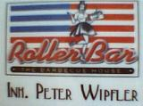 26.5.2005Neuer Sponsor für die Pilgrims
Die Dirty Pilgrims - die MTB-Fraktion des FSC - freut sich, ab sofort von der Rollerbar in Kleinzicken unterstützt zu werden!
Rollerbar - the barbecue house
7503 Kleinzicken
Hauptstraße 9
Geöffnet Mi - So 18 - 04 UhrMehr...
Die Dirty Pilgrims - die MTB-Fraktion des FSC - freut sich, ab sofort von der Rollerbar in Kleinzicken unterstützt zu werden!
Rollerbar - the barbecue house
7503 Kleinzicken
Hauptstraße 9
Geöffnet Mi - So 18 - 04 UhrMehr...
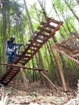 13.5.2005Build & Ride Again
Letztendlich hats das Wetter doch gut mit uns gemeint - ein perfekter Tag für einen tollen Event. Am 30.4. ging der 2. Build & Ride über die Bühne.Mehr...
Letztendlich hats das Wetter doch gut mit uns gemeint - ein perfekter Tag für einen tollen Event. Am 30.4. ging der 2. Build & Ride über die Bühne.Mehr...
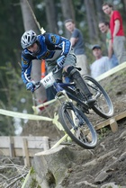 26.4.2005Dirty Pilgrims Downhill Racers
Die Dirty Pilgrims feierten am Sonntag ihr Debut in der Österreichischen Race-Szene.Mehr...
Die Dirty Pilgrims feierten am Sonntag ihr Debut in der Österreichischen Race-Szene.Mehr...
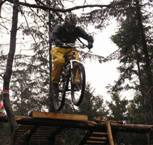 11.4.2005Build & Ride verregnet und verschoben auf 30.4.
Zum zweiten Mal meinte es das Wetter nicht gut mit uns: nachdem 2 Wochen sommerliche Temperaturen herrschten, regnete es am Samstag, 9.4., in Strömen.Mehr...
Zum zweiten Mal meinte es das Wetter nicht gut mit uns: nachdem 2 Wochen sommerliche Temperaturen herrschten, regnete es am Samstag, 9.4., in Strömen.Mehr...
 7.4.2005Bike-Termine online
7.4.2005Bike-Termine online
Die vorläufigen Termine für den Sommer der Bikesektion Dirty Pilgrims für 2005 sind jetzt online.
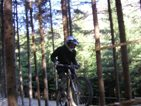 3.4.2005Build & Ride Again
Die letzten Bauarbeiten sind abgeschlossen!
Der Contest findet wie angekündigt am 9.4. statt. Beginn 14.00, alle Fahrer sind eingeladen, bereits am Vormittag zum Einfahren zu kommen. Wegbeschreibung und weitere Details gibts hier.Mehr...
Die letzten Bauarbeiten sind abgeschlossen!
Der Contest findet wie angekündigt am 9.4. statt. Beginn 14.00, alle Fahrer sind eingeladen, bereits am Vormittag zum Einfahren zu kommen. Wegbeschreibung und weitere Details gibts hier.Mehr...
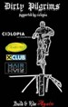 23.2.2005Pläne 2005
Die ersten Termine stehen fest:
Build & Ride Again: 9. und 10. April
Road Trip: 14. - 16. Mai
Dirt Style Session GroßpetersdorfMehr...
Die ersten Termine stehen fest:
Build & Ride Again: 9. und 10. April
Road Trip: 14. - 16. Mai
Dirt Style Session GroßpetersdorfMehr...
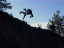 23.2.2005Das erste Video der 3x6=18 Dirty Pilgrims
...ist jetzt auch endlich online verfügbar. Mehr...
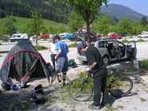 23.2.2005Noch ein neues Video
...diesmal mit etwas älterem Material: Holiday On Dirt - das Kona Bike Opening in Leogang im Mai 2004
Jetzt auch in der Large Version: 24mb, top-qualität!
Mehr...
...diesmal mit etwas älterem Material: Holiday On Dirt - das Kona Bike Opening in Leogang im Mai 2004
Jetzt auch in der Large Version: 24mb, top-qualität!
Mehr...
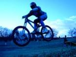 23.2.2005Neues Video
Die Bikesektion des Funsportclub 3x6=18, a.k.a. the Dirty Pilgrims, proudly present: just another video
just another video
Large Version (36mb)Mehr...
Die Bikesektion des Funsportclub 3x6=18, a.k.a. the Dirty Pilgrims, proudly present: just another video
just another video
Large Version (36mb)Mehr...
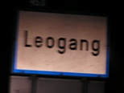 23.2.2005Fotos von Leogang 2004
Kleiner Vorgeschmack auf unseren Road Trip: Leogang 2004Mehr...
23.2.2005Winterbiken
Rü und Rynee waren am 11.12. am Kienberg. Rauhreif, Bodennebel und unser Freund die Sonne sorgten für aussergewöhnliche Landschaftsbilder. Wir haben versucht, diese Eindrücke auf Fotos einzufangen, doch die Bilder können die Schönheit der Realität nur spärlich wiederspiegeln...
30.12.2004Build & Ride Again
Vom 30.10. bis 1.11.2004 ist es wieder soweit: der zweite Mountainbike North Shore Build & Ride Contest, veranstaltet von den Dirty Pilgrims supported by Ciclopia, geht in Weißenbachl (Burgenland) über die Bühne.Mehr...